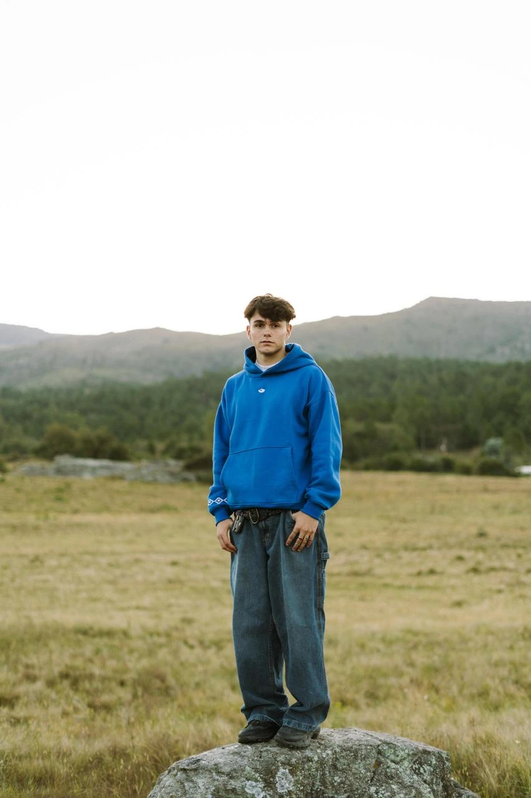

Nosotros
Balsamoa nació del sueño de dos amigos que buscaban transformar sus ideas y emociones en prendas únicas y con alma. No empezamos como una simple marca de ropa, sino como una forma de expresar quiénes somos y de dónde venimos.
Nuestras raíces, paisajes, costumbres y encuentros nos inspiran para crear piezas limitadas que transmiten identidad y cercanía. Cada prenda refleja lo que sentimos como argentinos y cordobeses: la calidez de lo familiar, los colores de nuestras sierras y la fuerza de nuestra tierra.
Creemos en hacer las cosas con sentido. Por eso trabajamos con procesos responsables, materiales seleccionados con conciencia y una producción que cuida tanto a las personas como al entorno. Para nosotros, la sustentabilidad no es tendencia: es un compromiso.
Balsamoa es un proyecto en crecimiento, con aprendizajes, desafíos y muchas ganas de ofrecer ropa que no solo se vea bien, sino que también se sienta bien. Porque detrás de cada prenda hay valores, trabajo y pasión.
Esto es Balsamoa, Bienvenidos.